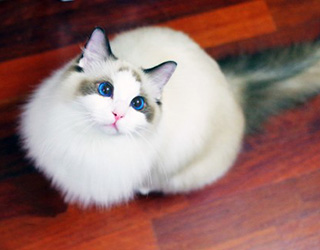
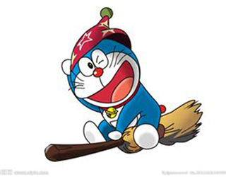
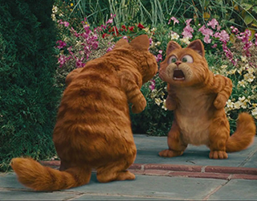
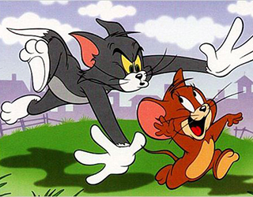
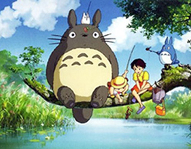
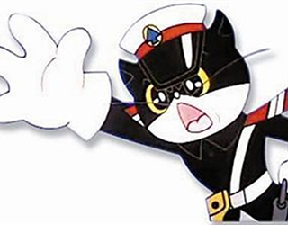
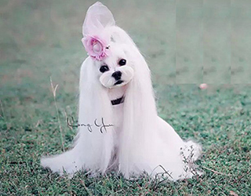
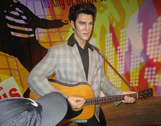

0. 选择具有.cartoon类的图片，加黄边
1. 选择具有alt属性的图片，加橙色边
2. 选择具有title属性的图片，加灰边
3. 选择满足以下条件的图片：具有title属性，且title属性为"小狗"，加黑边
4. 选择满足以下条件的图片：具有title属性，且title属性中包含有"猫"，加紫边
5. 选择满足以下条件的图片：具有title属性，且title属性中以"猫"开头，加粉边
6. 选择满足以下条件的图片：具有title属性，且title属性中以"猫"结尾，加绿边
7. 选择满足以下条件的图片：具有alt属性，且alt属性中的"猫"是以空格分隔的独立部分，加青边
8. 选择满足以下条件的图片：具有alt属性，且 alt属性为"猫"或者以"猫-"开头，加深红色边
9. 选择具有title和alt属性的图片，加蓝边
10. 选择满足以下条件的图片：具有title属性，有id属性，有alt属性，加红边
11. 选择具有.cartoon类的图片，加橙色边（属性选择器的方式）